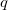

/math-f5e81d79b535c85746763245f006f7b5.png "x_p") , associated with the lower tail probability of the distribution of the Studentized range statistic.
, associated with the lower tail probability of the distribution of the Studentized range statistic.
computes the deviate, , associated with the lower tail probability of the distribution of the Studentized range statistic.
The externally Studentized range,, for a sample, is defined as:
/math-ec1f855d5b2eedff545ccb04a0b4cfee.png "q=\frac{\max (x_i)-\min (x_i)}{ \hat{\sigma _e} }")
Where is an independent estimate of the standard error of the /math-1ba8aaab47179b3d3e24b0ccea9f4e30.png "x_i") 's.
's.
For a Studentized range statistic the probability integral, , for /math-4fdefba26320686bb2bd0579a0df421c.png "\nu") degrees of freedom and
degrees of freedom and /math-4b43b0aee35624cd95b910189b3dc231.png "r") groups, can be written as:
groups, can be written as:
where /math-3b065bf53bc7bdd1f79632c4c7cbf976.png "p(q)C=\frac{\nu ^{\nu /2}}{\Gamma (\nu /2)2^{\nu /2-1}},\Phi (y)=\int_{-\infty }^y\frac 1{\sqrt{2\pi }}e^{-t^2/2}dt")
For a given probability /math-c6e44a3972332d8ed1d80f1e9febca26.png "p_0") , the deviate is found as the solution to the equation
, the deviate is found as the solution to the equation
. /math-39c3f805160075cd9d729ee2fa8cdd5f.png "\nu") ≥ 1.0 .
≥ 1.0 ./math-7694f4a66316e53c8cdd9d9954bd611d.png "q") .
.